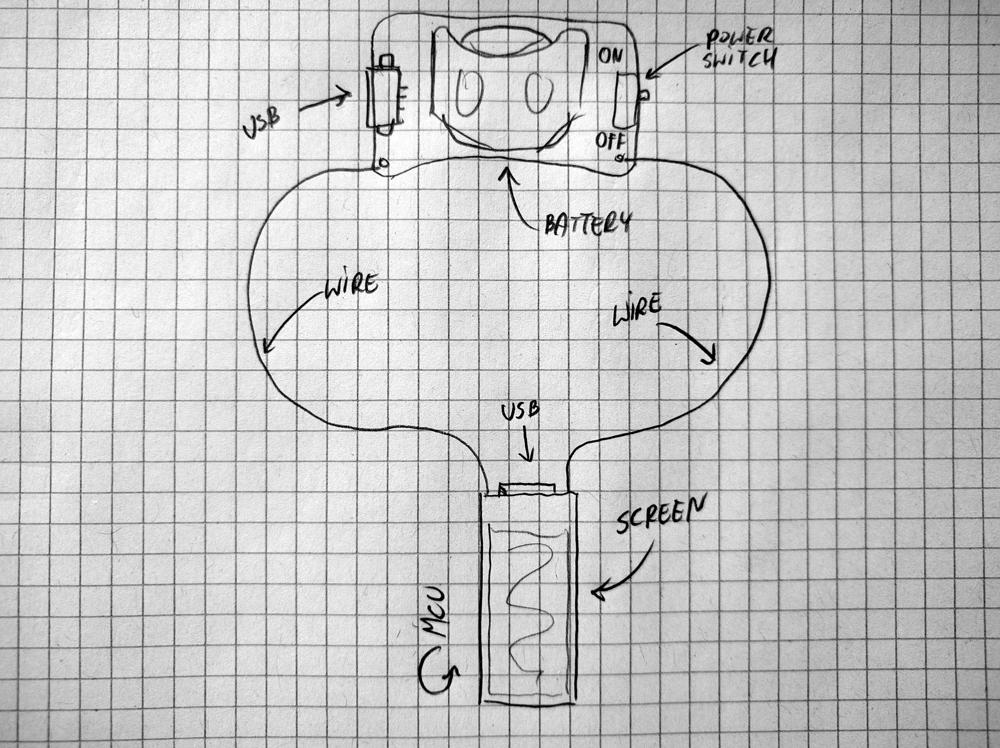
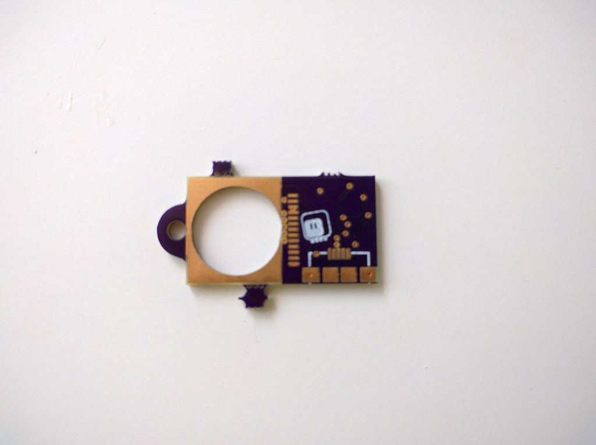

Redesign¶
Published on 2018-08-02 in Video Pendant.
I have been showing off the prototype of this pendant in different places, and during the poster session on EuroPython a person who I can’t now remember (sorry) suggested a really great solution to the problems of small battery and large thickness of the device. It looks something like this:
(The wire length is not to scale.)
Basically, they proposed to put the battery, together with the charging electronics and power switch on a separate device, that would be located on the neck or back, and that could be pretty much any reasonable size. The power would be transmitted to the device through a pair of soft wires that replace the string on which the pendant hangs. The pendant itself then only needs the actual screen, the microcontroller and the USB port for data transfer — all relatively small elements, with the USB socket being the largest. This lets me make it really thin, and since there are no mechanical parts, it can be embedded in resin easily (USB port can be problematic, but I have some ideas).
There are still some problems to be solved. How to prevent the heavy battery from sliding down the back of the wearer and pulling the pendant up? Maybe some kind of a clip for the collar? How prevent electronics from irritating the sensitive skin on the back of the neck? We will see how all that works.
That means that I won’t be assembling the PCB that just arrived from OSHPark. And good, because due to my laziness it misses the cutout for the sunken USB socket:
But that also means that now I need to design two new PCBs. No rest for the wicked.